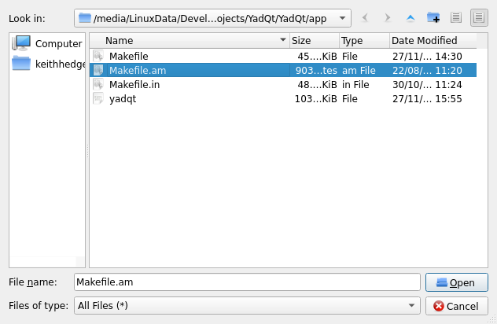
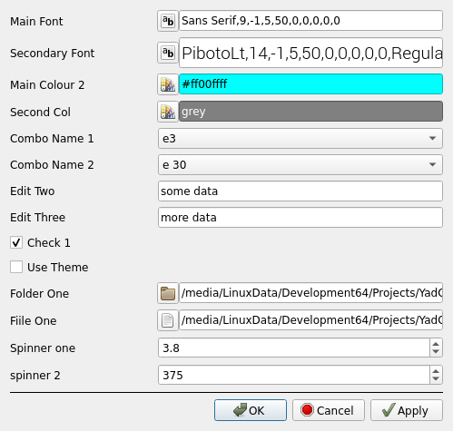
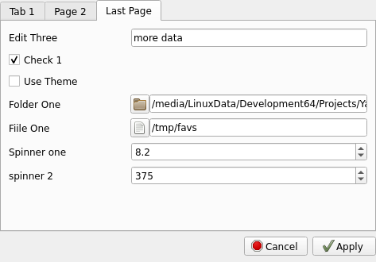

./autogen.sh --prefix=/usr
make
make install
yadqt -h
Usage: yadqt [options]
Options:
-h, --help Displays help on commandline options.
--help-all Displays help including Qt specific options.
-v, --version Displays version information.
-t, --title <YadQt Title.
-b, --body <YadQt Body.
-d, --default <USERNAME> Default text ( lists, forms etc, 1st positional arg passed will overide this ).
--fromstdin Read default data from stdin.
--width <0> Dialog width ( set to 0 for default size for dialog ).
--height <0> Dialog height ( set to 0 for default size for dialog ).
--opseparator <|> Separator for multi item output ( use "newline" to use '\n' ).
--ipseparator <|> Separator for multi item default text input ( use "newline" to use '\n' ).
--multiple Select multiple items ( lists ).
--btntoerr Print button to stderr.
--buttons <Ok> Buttons ( for info boxes ).
--icon <system-run> Icon to use for tray menu.
--timeout <0> Timeout to use for tray menu message in mS ( 0=no message ).
--allowreload Add 'Restart' item to tray menu.
--runfirst <ARG> Run application ARG before starting/reloading traymenu.
--remember Remembers last tray menu context menu item and sets main icon to menuitem icon, middle click then reactives last item.
--type <aboutqt> Box Type ( no type will display aboutbox ).
Types are:
about aboutqt query info warn fatal input getitem
form list textfile imagefile colour font text
tailbox notepad richtext openfile savefile prefsdialog tabbedprefsdialog traymenu help.
More info and examples here:
https://keithdhedger.github.io/pages/yadqt/yadqt.html
Dialog types:yadqt --type=help
yadqt --type=aboutqt
yadqt --type=about -b "About box with html<br><br><a href=\"https://keithdhedger.github.io\">Website</a><br><br><a href=\"mailto:keithdhedger@gmail.com\">Mail Me</a>"
yadqt --type=fatal -t "DANGER!" -b "BSOD!" --buttons="abort|Ignore" --btntoerr 2>/dev/pts/2;echo $?cat /usr/include/linux/limits.h|yadqt --type=getitem -t "Select Item" -b "Items:" --ipseparator=newline --fromstdin
yadqt --type=getitem -t "my title" -b "some input" -d "one|three|two|end" --btntoerr 2>/dev/pts/2;echo $?yadqt --type=input -t "my title" -b "some input" -d "default input txt";echo $?yadqt --type=info -b "Some info for you" --buttons="ok" --btntoerr 2>/dev/pts/2;echo $?yadqt --type=form -t "Simple Form" -b "Entry 1|Box Two|Data 3|Last Box" --btntoerr --default="default 1|box 2|box n" 2>/dev/pts/2;echo $?yadqt --type=form -t "Simple Form" -b "Entry 1|Box Two|Data 3|Last Box" --default="default 1|box 2|box n" --width=300 --height=0yadqt --type=list -t "Simple List" --default="$(cat /etc/fstab|tr '\\n' '|')" --multiple --btntoerr --width=600 --height=350 2>/dev/pts/2;echo $?
yadqt --type=list -t "Simple List" --default="$(cat /etc/fstab)" --btntoerr --width=600 --height=350 --ipseparator="newline"
yadqt --type=list -t "Simple List" --default="default 1|item 2|item 3|num 4|five|666|item nth" --multiple --opseparator="newline";echo $?yadqt --type=text -t "Show Text" --default="some text@second line@third line" --ipseparator=@while read;do echo $REPLY;done< <(cat /etc/fstab)|yadqt --type=text --fromstdin --width=800 -t "Show Text"yadqt --type=textfile --width=800 --height=400 -d /usr/include/linux/limits.h --btntoerr 2>/dev/pts/3;echo $?yadqt --type=imagefile -d '/home/keithhedger/WallpapersByCatagory/AllHallows/halloween-graveyard.gif'
yadqt --type=imagefile -d '/home/keithhedger/Backgrounds/bc3.png' --height=420 --width=640yadqt --type=colour --default="#c080ff80" -t "Select a colour..."|yadqt --type=input -t "Results" -b "Colour Selected" --fromstdin
yadqt --type=colour --default="#c080ff80" --btntoerr -t "Select a colour..." 2>/dev/pts/2;echo $?yadqt --type=font -d "Monospace,20"tail -n25 -f '/run/XfceWMScript.log' |yadqt --type=tailbox -t "Tail box" --width=800
Or
yadqt --type=tailbox -t "Tail box" --width=800 < /run/XfceWMScript.logyadqt --type=notepad --width=800 --height=400 ../../README ;echo $?yadqt --type=richtext --width=800 --height=400 '/tmp/KeithDHedger.github.io/docs/index'
Left click for balloon message, right click for menu.
If --allow restart is set and --data is a path to a file a 'Restart' item is added after the 'Quit' item in the context menu to restart the traynenu ( with possible different data in the file ).
yadqt --type=traymenu --title="Run Apps" --icon=system-run --data="XTerm|xterm|xterm|Open Google|google-chrome|xdg-open https://www.google.com|New Email|mail_new|xdg-email" --timeout=1000 --remember
YadQt/resources/examples/trayexample.sh
yadqt --type=openfile
yadqt --type=savefile -d /tmp/somefile
Prefs will be saved in ~/.config/KDHedger/APPLICATIONNAME.
APPLICATIONNAME will default to YadQt, or set it via the -a switch.
Prefs are standard QT QSettings files.
Prefs are also echoed to stdout When you select 'Apply', format for output is:
PREFSNAME=VALUE
Output seperator is set with --opseparator.
See the examples in /usr/share/YadQt/examples
pushd /usr/share/YadQt/examples
./bashprefs.sh
popd

pushd /usr/share/YadQt/examples
./bashprefstabbed.sh
popd
echo 'font|prefs/main font|Sans Serif,9,-1,5,50,0,0,0,0,0|colour|prefs/main colour 2|#ff00ffff|colour|second col|grey'|yadqt --type=prefsdialog -t "my prefs" -a yadprefsdialog --fromstdinfind . -print0 |xargs -0 grep -s --binary-files=without-match --ignore-case --binary-files=without-match --line-number "$(yadqt --type=input -t Search -b "Search for")"|yadqt --type=list -t "Found" --width 800 --fromstdin --ipseparator=newline |awk -F: '{print $1}'|xargs xdg-open